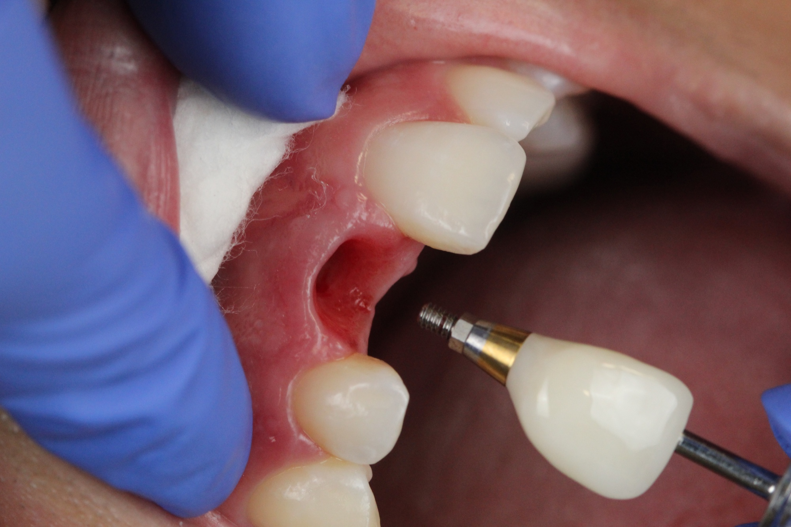
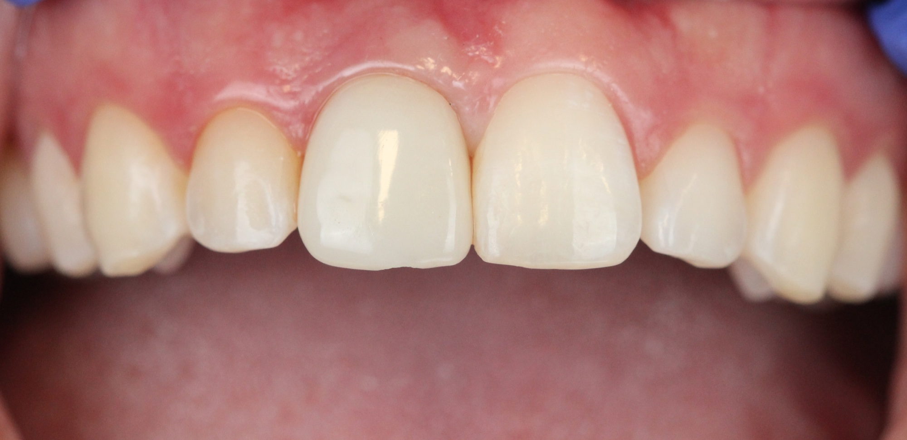

Consult
Discuss concerns, goals, health history, and possible alternatives.
Dental implants in Renton, WA
Dental implants can replace one tooth, several teeth, or support a complete arch. Dr. Suraj Bhogal plans around your bone, gums, bite, health history, and goals—not a one-size-fits-all package.


Your treatment path
Every case is different, but the process is organized so you know what happens next and why.
Discuss concerns, goals, health history, and possible alternatives.
Use the exam and imaging to map implant position and restoration design.
Place the implant and allow the bone and tissue to heal as indicated.
Deliver the custom tooth and review home care and maintenance.
Treatment recommendations and timing require an in-person diagnosis. Bone grafting, extractions, or a temporary tooth may be part of some plans but not others.
When implants may help
An implant may be one option when a tooth cannot be saved or is already missing. We compare it with bridges, removable options, and no treatment so you can understand the tradeoffs.
An implant crown can replace a tooth without using neighboring teeth as bridge supports.
Implants may support a bridge and reduce the need for a removable partial denture.
Implants can add retention or support a fixed full-arch solution when appropriate.
What we evaluate
Successful planning looks beyond the open space. We assess the bone and gum support, nearby anatomy, smile line, bite forces, and the way the final tooth should look and clean.
Dental implant FAQ
A dental implant is a small post placed in the jawbone to support a custom tooth replacement such as a crown, bridge, or full-arch prosthesis.
Candidacy depends on oral health, available bone, medical history, bite, and goals. An exam and 3D imaging help determine the safest options.
Timing varies. Some cases can be restored quickly while others need healing, grafting, or staged treatment over several months.
Implants need daily brushing, cleaning between teeth, and regular professional maintenance, much like natural teeth.
Visit SmileVibe Dentistry in Renton for a clear evaluation and options you can compare.